Retele de socializare in Republica Moldova
Cei mai multi internauti din Republica Moldova folosesc reteaua de socializare
Odnoklassniki.ru,
aproape 1,2 mln de utilizatori. Datele sunt masurate de gemiusAudience (BATI) si reprezinta numarul de utilizatori
reali care au accesat reteaua in luna seprembrie 2016.
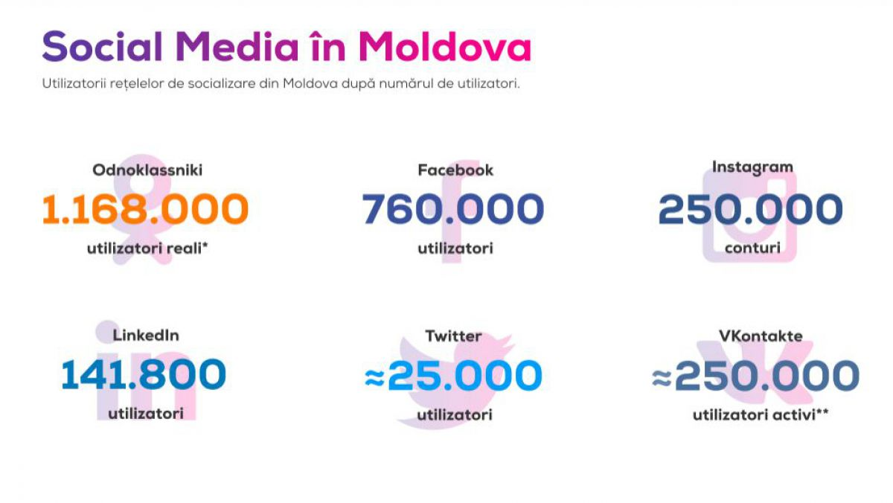
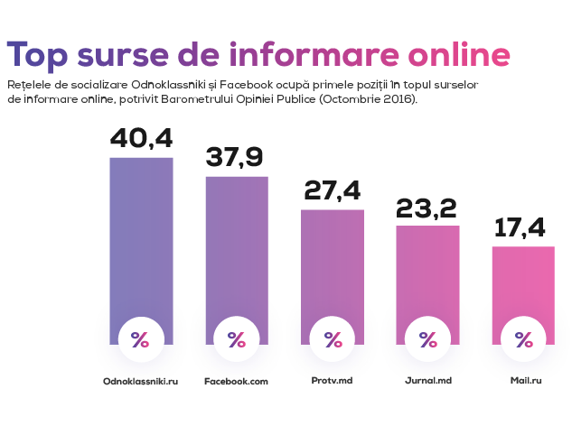
Pozitia secunda in topul celor mai utilizate retele de socializare este ocupata de
Facebook. In tara noastra sunt circa 760 de mii de utilizatori.
Numarul de conturi de pe
Instagram sunt aproximativ egale cu numarul utilizatorilor activi de pe
VKontakte.
Daca e sa analizam profilul utilizatorilor de pe Odnoklassniki si Facebook, observam ca in primul caz cei mai multi sunt barbati, spre deosebire de Facebook unde femeile detin intaietatea.
Cei mai multi dinte utilizatorii de pe Odnoklassniki au varsta cuprinsa intre 20 - 29 de ani si au studii liceale sau de colegiu.
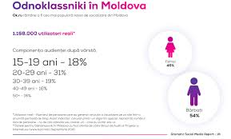
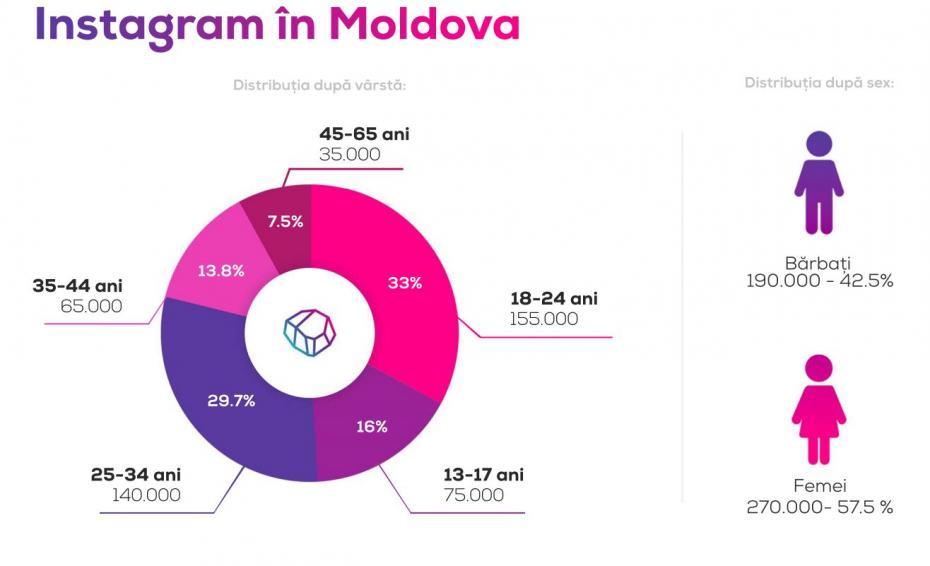
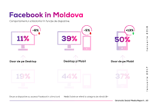
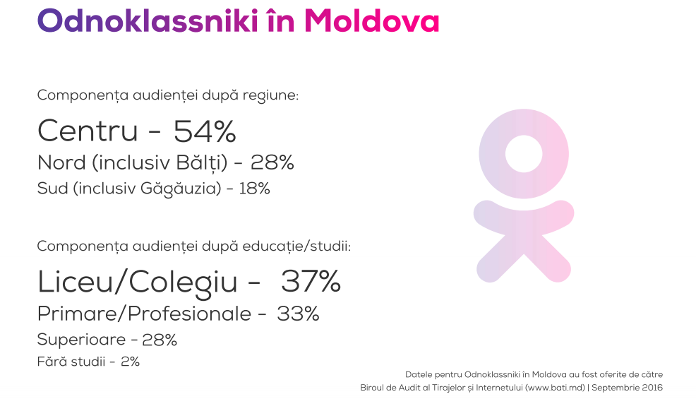
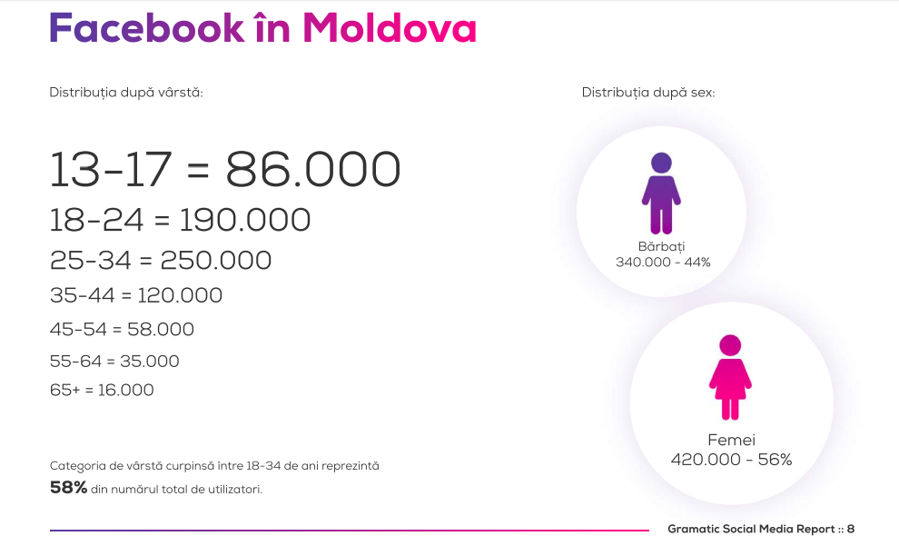
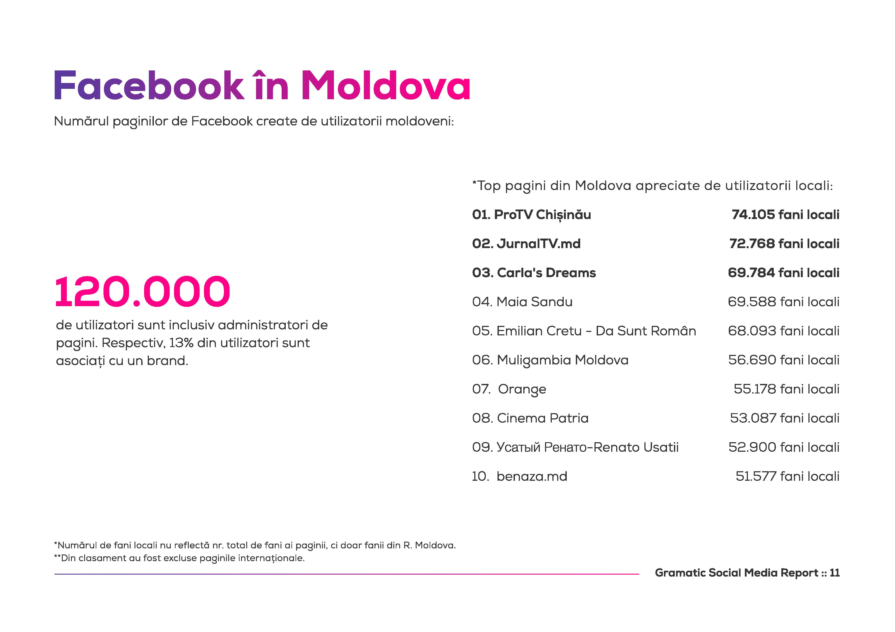
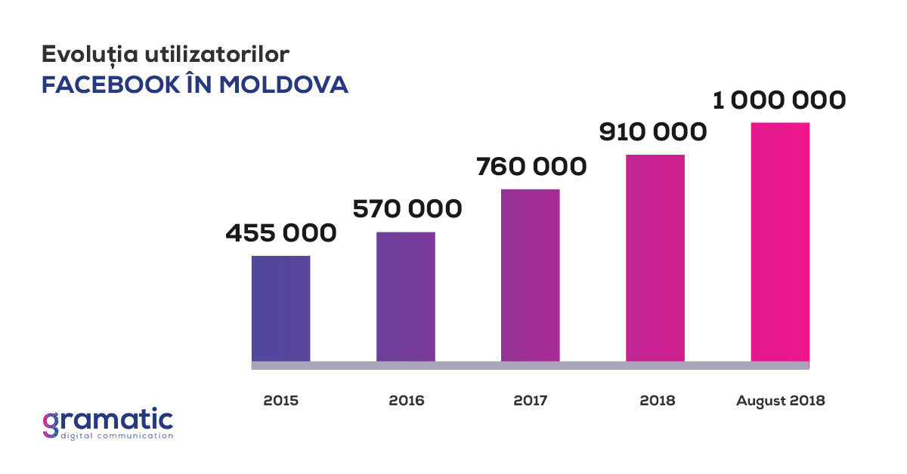
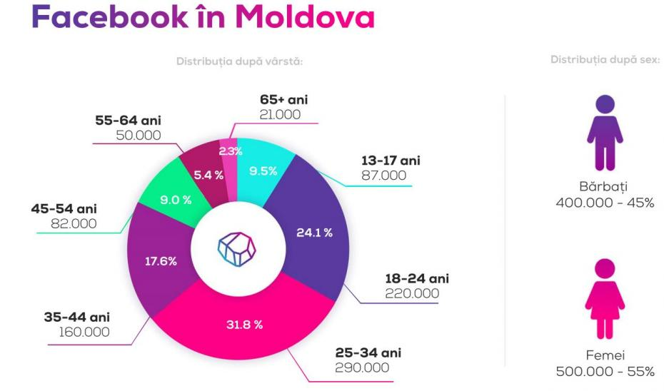
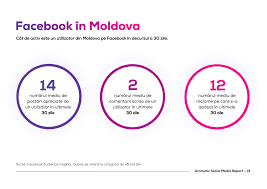
{kind=link}
{kind=link}
{kind=link}
{kind=link}
{kind=link}
{kind=link}
{kind=link}
{kind=link}
{kind=link}
{kind=link}
{kind=link}